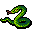

マムシ Adder
英語版 CrawlWiki の記事「Adder」(0.30 向け、2024-11-29 版)の翻訳です。原文の著者は編集履歴をご覧ください。
この記事は 0.30 の時点の内容で、最新の 0.34 とは違うところがあるかもしれません。
ヘビの一覧はヘビの一覧を参照。
| マムシ S  | |
|---|---|
| HP | 7-15 |
| HD | 2 |
| XP | 12 |
| 速度 | 13(泳ぎ: 60%) |
| AC | 1 |
| EV | 15 |
| 意志力 | 10 |
| 攻撃1 | 4(噛みつき: 毒)
|
| 耐性 | rDrown |
| 弱点 | なし |
| 生息地 | 水陸両生 |
| 知能 | 動物並み |
| 使用 | 何も使わない |
| 分類 | 生物 |
| 体格 | とても小さい |
| 種類 | ヘビ、マムシ |
| フラグ | 冷血 |

| 地下空間でよく見かける穴居性の爬虫類、いわゆるダンジョン蛇だ。
マムシ(adder) 名詞。蛇の一種。生活のほかの出費に葬式の費用を「足す(add)」習性があるので、こう呼ばれる。 |
基本情報
マムシは、毒のある噛みつきを持つ素早いヘビだ。この毒はレベルの低いキャラクターには命取りになりうるうえ、足が速いので、たいていの場合は逃げきれない。早ければ迷宮:2 から出てくる。
小技
- マムシは足が速いので、戦いを避けられないことがある。しかも毒はすぐに溜まっていく。ミノタウロスでさえ、乱数の目が何度か悪ければ負けかねない。形勢が悪くなったら、初期の消耗品をためらわずに使おう。
- できれば離れたところから片付けよう。それができないなら、すばやく倒せるくらい強くなるまでは、近接戦に入る前にブーメラン、ジャベリン、ダーツ、石を投げて弱らせておこう。
- 毒の噛みつきを必要以上に受けないためには、ヘビが 2 マス先にいるうちに後ろへ下がり、向こうから距離を詰めさせるといい。こちらから突っ込んだり、その場で待ち構えたりすると、こちらが一度も攻撃しないうちに 1〜2 回ただで噛みつかれてしまう。